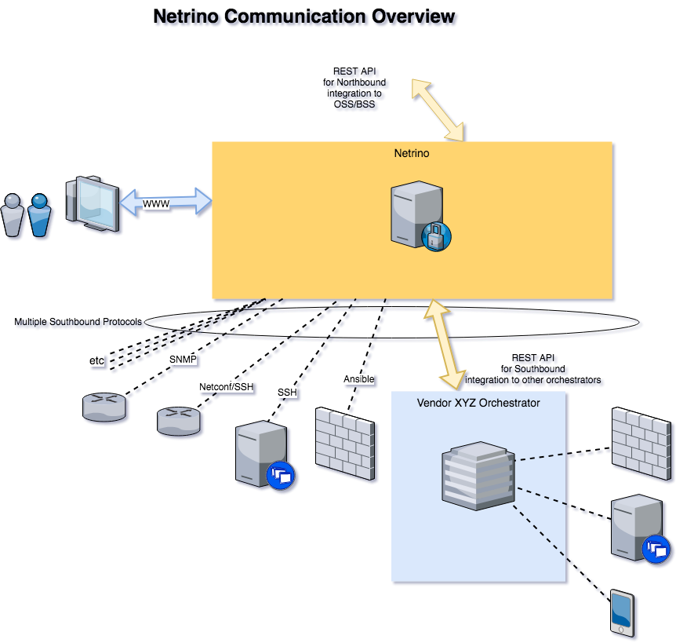
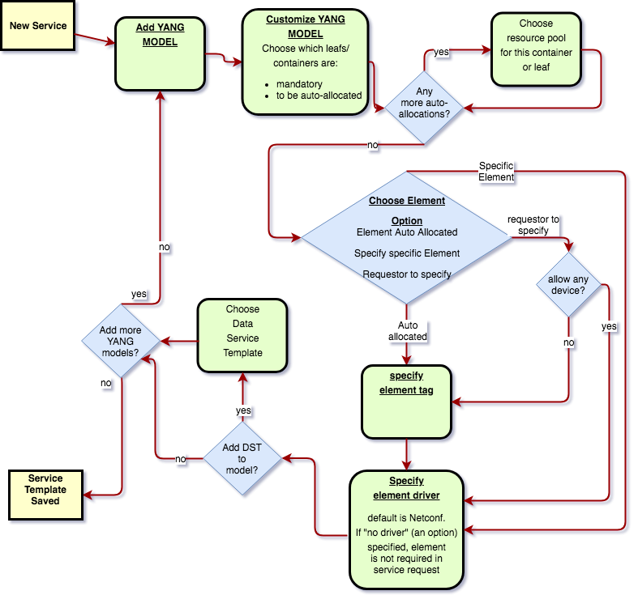

Note
This is still a work in progress.
The Tachyonic Project [1] includes an orchestrator, called Netrino. Netrino is capable of orchestration on many different device types. Some directly, and others via existing orchestrators of those devices. Hence the reference of “Orchestrator of Orchestrators”.
One of the end goals is for the system to do the life cycle management of services.
These services could be anything, from simple services like email, SIP or VPN services, to more complex ones like end-to-end MPLS Layer3 VPNs or Metro Ethernet.
The term “service” is used here, but it means more than just a service that is provided to a customer. It can also eg. reference an internal service. For example, one could create a service that monitors some usage, and if some threshold is exceeded, send an alert, update some config on one device, remove some other config and add some additional config on another device.
Another example might be a service that periodically connects to devices to gather some data in order to store it, so that it can retrieved again for graphing purposes.
For these purposes, Netrino has multiple components. It has an South-bound API’s, an Element manager, Resource manager, Service designer, Service Request Manager, Service scheduler, Templating engine and Orchestration engine.
This page contains the blueprint for the design of Netrino.
Netrino has two reasons for communicating with devices. One is for information gathering, the other for configuring. Different devices have different methods and protocols available for these purposes. The aim for Netrino is to be as flexible as possible (thus allowing multiple methods to communicate to devices, and providing the option to choose which) and as extensible as possible (allowing for future-proofing by catering for the seamless addition of new methods).
The devices on which Netrino has to orchestrate services, are referred to as elements. Netrino needs to store a list of these elements, for the purpose of making them available as options when services are to be provisioned on them.
Typically, elements will have an IP address associated, which is used for communicating with the device. However, it is foreseen that Netrino is to know about devices which it can not communicate with. An example would be a cabinet in which devices are mounted. For this reason, an IP address is not a required value when storing an element’s details.
Elements should have at least a name. For servers and network devices like routers, this would eg. be the hostname. The primary key used to reference elements is a UUID, which allows one to change an element’s IP and/or hostname without losing any back references.
Netrino communicates with devices through what is known as South-bound Interfaces, just referred to here as
“interfaces”. These interfaces are python modules. They register themselves as python entry points called
netrino_interfaces to make their presence known to Netrino.
Netrino comes with a couple of built-in interfaces (netconf, ansible, snmp, openstack,
contrail) but also provides the ability to easily add new interfaces.
Here is the example python setuptools entry point registration for netconf:
setup_dict = dict(
entry_points={
'netrino_discover': [
'netconf = netrino.interfaces.netconf.discover:discover'
],
'netrino_interfaces': [
'netconf = netrino.interfaces.netconf.interface:Interface'
],
'netrino_elements': [
'netconf = netrino.interfaces.netconf.element:Element'
]
)
As mentioned previously, an element may have more than one interface associated with it. The specific interface to use for communication during a particular request, is to be explicitly defined during the design of a service.
Elements may have a parent element associated with them. For example, a server might have the UUID of a cabinet as its parent element. The cabinet in return, might have a data center room’s UUID as its parent element reference. This of course implies that elements may have one or more children.
InfinityStone caters for domains and regions. Netrino’s elements may belong to a region, but not to a domain. The reason for this is that even when working inside a scoped session, all elements must still be available for service orchestration. For this reason all elements will always “exist” in the global Infinitystone scope.
Typically one could have more than one Netrino installation, and they may have jurisdiction over different regions. For High Availability purposes, a region may have more than one Netrino instance as well.
Inter region orchestration happens as follows: When a Netrino instance receives a request to provision on an element that is in another region, it will forward the request to the Netrino endpoint in that region.
Elements can belong to different device groups as well, purely for convenience sake. This is done by means of tagging. This allows one to tag devices by category, purpose, or whatever grouping is useful.
When a new element is added to Netrino, one may specify the interfaces available for communication with the device. If no interface are associated with the device, communication with it wil not be possible.
During element creation, a UUID is generated, and an element name must be supplied. The only compulsory field is the device name, which has to be unique, in order to prevent the confusion which would most likely ensue when it isn’t. The following fields are optional:
Interfaces store additional information about elements. Specifically, things such as logn credentials. The SNMP driver for example will store the version and community string required to communicate with the device, while the SSH driver stores username and password or key. This is stored in the database as a json entry, and is called metadata. Some interfaces also store resources associated with the element.
Netrino also provides the ability for the bulk addition of elements. When a subnet is supplied during a creation request instead of a single IP address, it will iterate through the ip addresses in the subnet and attempt to connect to each one. When a successful communication attempt has been made, it is the task of the interface to add the element (or update if it already exists), include itself in the list of available interfaces for the element, and update all other relevant tables such as resource tables as needed.
Elements can be completely removed from the database. When this happens, all resources tied to it becomes available for usage again.
In the future Netrino may consider the networked elements to be the “source of truth” when it comes to resources. The idea is then for it to assume it is not the only orchestrator of the elements and thus caters for the case where element configuration are updated without its knowledge. This gives rise to the requirement that elements have to be regularly “scanned” for changes in configuration and resource usage. Elements can be configured to be scanned at regular intervals, or every time after Netrino has updated its configuration or both. The default is not to be scanned.
Elements can be updated on an ad-hoc basis as well.
As mentioned, the interface used for communicating with an element, is a python module. It has an Interface class
registered as netrino_interface entry point. This module must also register a Discover and Element class as
netrino_discover and netrino_element entry points respectively. The discover class will add an element if
successful communication attempt has been made via the same interface, and the element class is a Luxon model indicating
the structure of the metadata.
The Interface class will use some method to update an element’s operating state. For example, the
netconf interface makes use of the ncclient library, which offers the edit_config method for NETCONF’s
edit-config operation. This method must be made known to
Netrino in order to use it when orcestrating a service.
In order to provide a service, one typically requires resources. For example, this could be things like IP address, VLAN number, device port or BGP community such as a route-target. These are collectively referred to as resources.
Netrino has a built-in resource manager for which the idea is to eventually cater for both for green field and brown field scenarios.
When creating a resource pool, it is given a type (eg. IPv4) and a range. The actual resource usage is stored in a different table that references this pool. In the brown-fields scenario, whenever an element is updated, the resource usage is updated.
When designing a service, the chosen YANG models are scanned for type definitions. Certain types can
be linked to resource pools. For example, the RFC 6991 type definition of
ipv4-address is linked to IPv4 resource pools. As such, the resource pools can be associated to those entries in
the YANG models so that the entries can be automatically assigned from the next available resource in the pool when a
Service is requested.
Resource pools thus have an optional associated list of YANG type definitions. This is done by means of a mapping table.
Mapping Table
Netrino also provides a mapping table, that can be used for auto-allocation during service definition and creation. In addition to the as-per-usual id, the mapping table has three columns:
Yang type | mapping type | value
Yang type is the YANG type definition. Mapping type can either be “resource_pool”, or “netrino_mapper”. In the case of:
Note
For example, we can have:
ipv4-address | resource_pool | c5b040d4-180f-4b03-bdde-5c2b84b6146f
Where:
ipv4-addressor
tenant-id | netrino_mapper | infinitystone_tenant
Where:
netrino-mappers entry point.Note
Example Entry point:
setup_dict = dict(
entry_points={
'netrino_mappers': [
'infinitystone_tenant = netrino.mappers:tenant_from_context'
}
)
Resource pools can be globally significant (e.g. public IPv4’s) or element-significant (eg. VLANS on a switch). Unless specified otherwise, global is assumed. If locally significant is specified during the creation/updating of a resource pool, then the element or element tag has to be specified that this resource pool is linked to.
Elements can also be resources. When elements are to be auto-allocated, an element tag must be associated to the specific YANG model in the service.
The Templating Engine is responsible for managing the templates. When templates are created, they are uploaded to the object store (Katalog).
Netrino offers the following orchestration templates.
YANG
Netrino makes use of YANG models to define Services. Although YANG was designed along side NETCONF, it can be used for any arbitrary modelling since it can be serialized into popular API notation formats such as JSON or XML.
This means not only does Netrino support your favourite vendor out of the box by loading its YANG models (if it already supports NETCONF), but you can even make provision for ones that don’t by creating the YANG model and interface/driver for it yourself.
The YANG models are stored in the object store, and a helper function is supplied that can map the module name to the namespace, to be stored for easy lookup.
HEAT
Netrino also makes HEAT templates available for orchestration.
Ansible
Netrino also makes HEAT templates available for orchestration
TEXT
Text templates can be used for example when the underlying element interface can take configuration snippets as input.
For example napalm’s load_merge() method.
JSON
Json templates, typically used alongside with REST API element interfaces.
XML
XML templates.
In order for Netrino to provision a service, it has to be told what the service comprises of. The Service designer provides to the operator the opportunity to do just this.
When designing a service, the operator specifies the YANG model or models to use for the service. Each model can also be linked to an element or element tag. In case linked to an element tag, the requester of the service may specify which of those elements are to be used for this particular model of the service. (Specifying an element that does not have the associated tag will result in a failure of the Service Request creation.) If the element id is omitted, an element is auto-allocated from the pool of elements with the tag, if auto-allocation of the element was specified.
By default, for each YANG model specified, only leafs with the mandatory statement in the YANG model are considered to be manditory. Netrino provides the opportunity for the operator to override this (during service template creation) for each leaf/container in the model, and also provides the opportunity to link which leafs should be auto-allocated.
This is done by means of the mapping table.
By default, the netconf interface will be used for communication with the element, but this can be overwritten when designing the service. The JSON data sent in the request (to the orchestration engine) for creation of the service, may contain the device ID and data matching the YANG model for each model. Netrino will attempt to auto-allocate compulsory fields that was missing from the request, if those leafs/containers were specified to be auto-allocated.
JSON data that is send to the REST API of the element interface view, must conform to RFC7951 JSON Encoding of Data Modeled with YANG in order to identify the particular YANG model. From the namespace to module mapping, the YANG model can be retrieved for each submitted portion
Some interfaces do not make use of netconf as the underlying communication protocol. When services are designed for these, we still specify a YANG model, but specify a different interface to be used. Netrino comes with a couple of built-in YANG models for its built-in drivers, such as ansible and SNMP. These YANG models are used during the creation of the Service Requests for:
If the validation and allocation was successfull during such a service request, the received data is updated with the auto-allocated data, and passed onward to the interface.
Services are also used for the purpose of obtaining data from elements. Let’s call these Data Services Templates.
Each model in a Service Template can also be associated to such a Data Service Template, for the purposes of gathering Data related to the model, and storing it in the Service Request. For example, a Service Template might be for a Virtual Machine (VM) deployed on an Openstack cluster. When such a Service has peen provisioned, one might care about data such as the IP address that was assigned, and the URL to access the console. For this purpose one can create a Data Service Template that retrieves the required data to be stored in the Service Request for the VM Service.
Netrino is also to provide the option to allocate a cost to a Service. This is optional, and can have one of two payment types: Once-off or recurring. In the case of recurring, the recurrance period can also be specified. There is also an option to specify the availability. By default the availability will be private (meaning only the operator or owning-tenant can request this service). When the availability is set to public, and the service does not belong to a Tenant, it will become available in the Self-Service Market Place. (Perhaps revenue resulting from tenant-owning public services can be shared between the Tenant and Service Provider - a sort of agent programme).
This is one of the main reasons for Netrino’s existence. A service request is the marriage of a service to a customer, which inevitably also involves configuration update on one or more elements. If customer X wants service Y, create a service request on Netrino.
During the creation of a Service Request the customer is automatically selected as the current tenant in the Infinitystone scope, and the service template must explicitly be specified. Once the service template is known, the additional fields are dictated by the YANG models in the service template, as well as the device configuration and YANG customization in the Service Template. If the data in the service request can not be parsed for whatever reason (including invalid syntax, required field(s) missing or resource depleted) the service request is not created. On the other hand, if all information was supplied correctly, the service request is created immediately and a job ID is returned. The user may reference this ID at any time to get an update on the status of the Service Request and its associated jobs.
During the creation of a service request, Netrino will auto-populate resources from the next available in the pool where required. The moment it does this, it will immediately remove the resource as being available from the pool, in order to prevent a race condition. If spare resources in the pool has been depleted, an exception is raised.
The data sent in the Service Request, comprises of a service Template ID, and an ordered array of objects. Each object should contain the data for the corresponding YANG model in the Service Template, as well as the element ID(s) if required. Each one of the entries in the list is of course passed to a minion.
Each of these tasks may return some data. The worker performing the task will update its associated model in the service request with the data returned, for the purposes of viewing a log of the result of the task.
In addition to attributes like
each Service Request also makes provision for storing additional arbitrary data related to each model in the service. When the status for a Service Request is queried for the first time, it will fire up a Service Request on each of the Data Service Templates associated with the models, if any. The results of those Service Requests, are used to populate this field.
Subsequent attempts on Service Requests Status will update these fields.
The Service Request Manager is the place where one may obtain the list of previously created Service Requests, as well as drill down into them to see the status of each. Each one lists the deployment status of the each YANG model in the Service Template, as reported back from the minion that implemented the request.
Netrino Also provides a Service scheduler, where Service Requests can be scheduled ahead of time. The Service Schedluer supports once-off Service Request creation, as well as recurring creation of Service Requests.
Footnotes
| [1] | The Tachyonic Project is a Multi-Tenant Multi-Tiered Eco System that was build for Service Providers. For more information, see http://tachyonic.org |
| [2] | Using the Scuttle method. See http://howto.philippkeller.com/2005/04/24/Tags-Database-schemas/. |